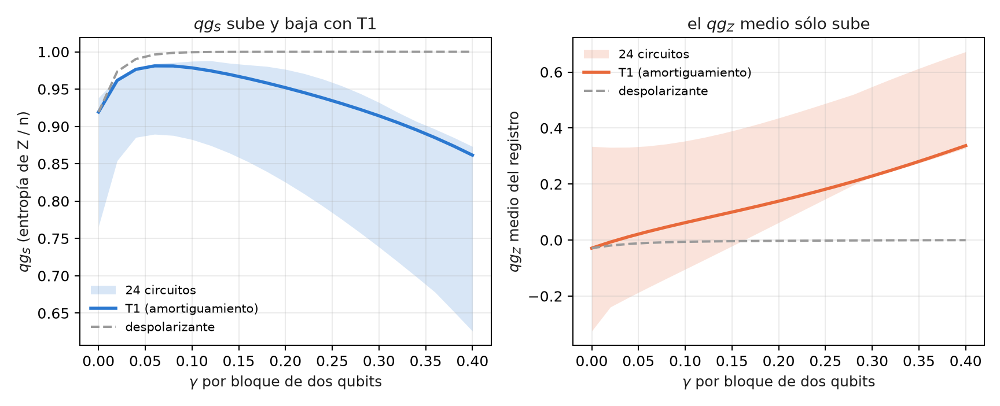
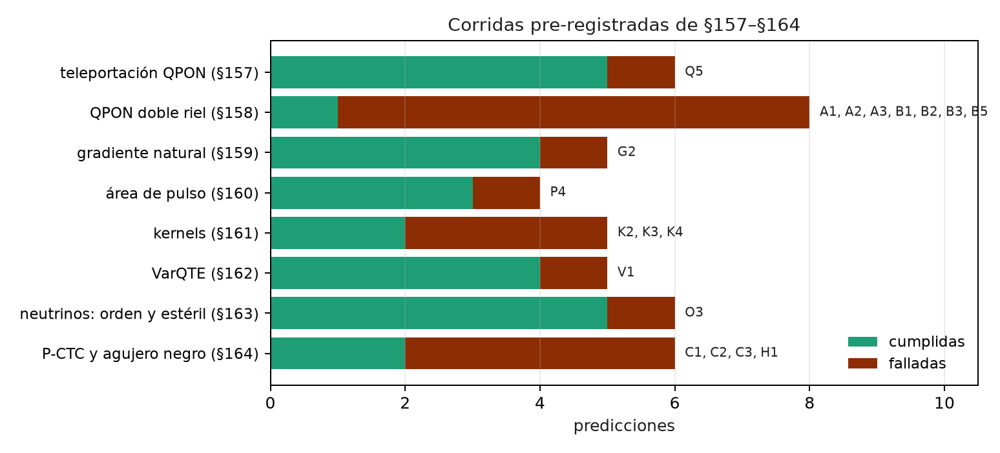

30 Límites estructurales, equivalencias y resultados negativos
El capítulo 29 juntó lo que dio un beneficio medible. Este junta lo que no: los puntos ciegos que vienen de la definición misma de la escala, las equivalencias que se presentaron como ventajas y las predicciones que fallaron. Un límite entra si se puede mostrar en código o si está en una corrida guardada, con la misma acción sin qang al lado. Las comprobaciones nuevas están en tools/make_cap30_figures.py; el resto se cita de las notas y de los capítulos donde se midió.
30.1 Desde la base: qué no puede ver la escala
La ecuación del capítulo 1 hace de qg una función de una sola probabilidad, \(p_0\), medida en la base Z. De ahí salen dos clases de límites:
- Lo que vive fuera de las poblaciones en Z. Las fases relativas y las coherencias no cambian \(p_0\), así que ninguna lectura qg de la base Z las ve. Sólo se ven midiendo en otra base, y entonces ya no es la lectura qg de la base Z.
- Lo que el filtro no alcanza. El filtro descarta disparos fuera del sector de peso correcto. Un error que deja el disparo en el sector, o un circuito que no conserva el peso, quedan fuera de su alcance.
Ninguno es un defecto de implementación: son consecuencias de la definición.
30.2 Estados de grafo: entrelazamiento invisible en Z
Un estado de grafo es \(H^{\otimes n}\) seguido de una CZ por arista. La CZ es diagonal, así que sólo cambia fases: todas las poblaciones en Z quedan en \(2^{-n}\). El script lo comprueba con el anillo de 6 qubits:
- su distribución en Z coincide con la de \(|+\rangle^{\otimes 6}\), que no tiene entrelazamiento, con diferencia exactamente 0;
- por eso \(qg_Z = 0\) en cada qubit, \(qg_S = 1\) y la correlación qg es 0 en los dos estados;
- los estabilizadores \(X_i Z_{i-1} Z_{i+1}\) valen 1 en el estado de grafo y 0 en el producto. Distinguen los dos estados, pero se miden en la base X.
Sin qang pasa lo mismo: cualquier estadística de la base Z, cruda o tomográfica, es ciega a este entrelazamiento. qang hereda el límite, no lo crea (notas §8.1). El desfase en la lectura es el mismo punto ciego visto desde el lado del ruido (§10.4).
30.3 \(qg_S\) no es monótona bajo T1
Con ruido despolarizante, \(qg_S\) (la entropía de la distribución en Z dividida por \(n\)) sube hacia 1 a medida que el ruido crece, así que sirve para ordenar dispositivos. Con amortiguamiento (T1) no: primero sube, porque el ruido mezcla, y después baja, porque el T1 empuja todo a \(|0\ldots0\rangle\), que tiene entropía 0.
El script corre 24 circuitos de volumen cuántico de 4 qubits con amortiguamiento en cada qubit después de cada bloque de dos qubits, con matrices densidad exactas:
- \(qg_S\) sube y baja en los 24. En el circuito 0 empieza en 0,919, llega a 0,981 con \(\gamma=0{,}06\) y vuelve a 0,923 con \(\gamma=0{,}28\). Sola, no distingue un dispositivo casi sin ruido de uno con mucho T1.
- El par (\(qg_S\), \(qg_Z\) medio) sí los distingue. En esos dos puntos el \(qg_Z\) medio vale −0,029 y +0,209. El T1 empuja el \(qg_Z\) medio hacia +1 y el ruido despolarizante lo deja en 0 (va de −0,029 a 0,000).
- El arreglo no es un teorema. En este modelo el \(qg_Z\) medio crece de forma monótona en 21 de los 24 circuitos. Las notas, con su modelo de T1 a mitad de circuito, lo encontraron en 23 de 24 (§10.4 D). En los demás tiene escalones pequeños hacia abajo.

30.4 La equivalencia del gradiente natural
El capítulo 23 lo midió y acá queda escrito como límite. Cambiar de coordenada no acelera un optimizador. El gradiente natural escrito en qg es el descenso común en \(\theta\), salvo términos de orden \(\eta^2\) (notas §15.1). Las afirmaciones de que “converge en qg donde \(\theta\) no converge” venían de recortar \(\theta\) a \([0,\pi]\). Eso esconde los mínimos con \(\theta<0\), y sin el recorte el descenso en \(\theta\) converge.
En la corrida pre-registrada de §159, con 20 semillas del modelo de Ising de 4 qubits:
- el descenso en \(\theta\) llegó en 103 pasos (mediana);
- el descenso en qg no llegó nunca;
- el gradiente natural con la métrica completa, en 22,5 pasos.
Esa ganancia es del gradiente natural y no de qang: la métrica completa no se lee en qg. La versión que sí se lee de correladores qg (bloques \(qg_{YY}\)) tardó 79,5 pasos. Mejoró 1,3 veces sobre \(\theta\), no las 1,5 que se habían predicho (G2 falló).
30.5 El filtro no alcanza los circuitos profundos
En el capítulo 25 el filtro de número de electrones bajó tres veces el error de H₂ y no le hizo nada a LiH. Las notas (§50) separaron las causas, y la principal resultó ser el alcance: el filtro actúa sobre los disparos medidos en Z, y en LiH el error está en los grupos medidos en X e Y.
| caso | compuertas de 2 qubits | error en el grupo Z, crudo → filtrado | grupos X/Y | total crudo → con filtro (mHa) |
|---|---|---|---|---|
| H₂, todos con todos | 3 | 13,0 → 4,9 | 0,9 | 13,9 → 5,9 |
| LiH, todos con todos, 1 capa | 20 | −2,2 → −1,9 | 26,2 | 24,0 → 24,3 |
| LiH, todos con todos, 3 capas | 60 | −20,8 → −12,4 | 97,4 | 76,6 → 85,0 |
| LiH, heavy-hex, 3 capas | 60 | −30,5 → −18,0 | 165,8 | 135,3 → 147,9 |
- No es el enrutamiento. El ansatz de LiH es de primeros vecinos y necesita las mismas 60 compuertas sin enrutar.
- El remedio qg para los grupos X/Y falla. Reescalarlos con la fuerza despolarizante que se lee de la fracción conservada corrige de más, entre 2 y 3 veces (de +97 a −124 mHa). El ruido local de compuerta no es despolarizante global.
- Hubbard llega a la misma pared (§29). En fake_brisbane, desde 4 pasos de Trotter (188 ECR o más, 18 % de los disparos conservados), todos los métodos quedan en el piso de ruido: la doble ocupación tiende a 1/4 y el desbalance de carga a 0.
Con moléculas más grandes, los grupos X/Y son cada vez más y cargan la mayor parte de la energía de correlación. Un filtro en Z alcanza una parte cada vez menor del error.
30.6 La red de peso 1 es clásica
El filtro protege exactamente del T1 a una red neuronal cuántica que conserva el peso (capítulo 20). El mismo motivo la hace simulable. En el sector de peso 1 la red es una matriz ortogonal \(O\) que actúa sobre los datos cargados \(v\), y cada lectura vale \(qg_Z^{(i)} = 1 - 2\,(Ov)_i^2\). Es una forma cuadrática en \(v\) que se calcula en \(O(n^2)\) (notas §76, F2). El script lo comprueba en circuitos de 5 qubits, con cargador unario y red RBS al azar: el error máximo es \(7{,}8\cdot10^{-16}\).
- §75: el mejor modelo clásico iguala o supera a la mejor red cuántica en los cuatro conjuntos de datos (en dígitos, SVM con núcleo RBF 0,963 contra 0,933). No hay ventaja cuántica.
- §76: la predicción Q3 decía que la red no superaría a su gemelo cuadrático por más de 1 punto, y falló, pero por la línea de base. El gemelo usaba la regularización por defecto. Corrido después del resultado con \(C=100\), queda a entre 0,3 y 1,6 puntos de la red.
- Con peso 2 la salida es de cuarto grado y deja de ser trivial. Aun así, el techo de la codificación se acota con una forma cuadrática sobre los productos de amplitudes (§87).
El filtro aporta robustez a redes chicas en hardware ruidoso. No aporta supremacía.
30.7 Dónde el filtro no se aplica: fases y cifrado clásico
El filtro exige que cada compuerta conserve el peso de Hamming. El analizador de qang (qang.ibm.WeightPreservationCheck) lo decide compuerta por compuerta antes de correr:
| circuito | ¿conserva el peso? | compuertas que lo rompen |
|---|---|---|
| QFT de 4 qubits | no | 4 |
| QPE de la compuerta T, 3 qubits de conteo | no | 6 |
| GHZ de 4 qubits | no | 4 |
| volumen cuántico de 4 qubits | no | 8 |
| neutrinos de 3 sabores (capítulo 9) | sí | 0 |
| cargador unario + red RBS | sí | 0 |
La estimación de fase y todo lo que se apoya en ella (Shor, HHL) empieza con Hadamards, que mezclan todos los pesos. Ahí la escala aporta una lectura cerrada de la fase, \(qg_\Phi = e^{i2\pi\varphi}\), invertible en todo su dominio (notas §13). Esa lectura es la que QPE calcula con un circuito, pero no reduce el error de QPE. La criptografía post-cuántica (capítulo 16) es aritmética clásica: no hay qubits ni operadores, así que qang no tiene nada que leer.
30.8 Las predicciones falladas de §157–§164
En las ocho corridas pre-registradas de §157–§164 se cumplieron 26 de 45 predicciones, según los veredictos que guardó el código. Las 19 falladas:
- Teleportación por red óptica pasiva (§157, Q5): 5 de 24 casos lejos del óptimo, todos donde la fidelidad ideal es 1 (medida entre 0,897 y 0,957). El circuito no conserva el peso, así que el único filtro es el anuncio de pérdida.
- Doble riel (§158, siete falladas): la fidelidad que se lee de tres correladores predice la de la teleportación con diferencias de 0,029 o menos, pero no la descompone (A1–A3). Los anuncios falsos ponen un piso (B1, B2, B5).
- Gradiente natural (§159, G2): 1,3 veces contra las 1,5 predichas.
- Área de pulso (§160, P4): la vuelta de período \(\pi\) de RZZ ahorra 1,14 veces en error contra las 1,5 predichas.
- Kernels (§161, K2–K4): la precisión casi no cambia con la reparación y la alineación con el objetivo no ve el encogimiento; K4 falló por sus umbrales, no por su dirección.
- VarQTE (§162, V1): el ansatz no es lo bastante expresivo a tiempos largos (fidelidad sin ruido 0,934 en \(t=2\)).
- Neutrinos (§163, O3): los valores filtrados quedan entre 0,010 y 0,033 por encima, por el error dentro del sector.
- Bucles temporales y agujeros negros (§164, cuatro falladas). En FakeTorino la paradoja no se suprime del todo: el éxito en \(\varphi=\pi\) es 0,056 donde la predicción pedía cerca de 0 (C2), y la rotación controlada da 0,600 donde el valor exacto es 1 (C3). El decodificador funcionó en los tres dispositivos (H2, H3); H1 falló por 0,001.

30.9 Lista consolidada de limitaciones
La lista de las notas (§14), con lo que agregó el libro:
- Singularidad del jacobiano en \(\theta\in\{0,\pi\}\): regularizarla cuesta exactitud cerca de los polos (capítulo 23).
- Trampa del rango de arccos: las actualizaciones en qg no llegan a \(\theta<0\); en H₂ pierden toda la energía de correlación (§8.2).
- Ceguera a la base Z: el entrelazamiento de los estados de grafo y el desfase en la lectura son invisibles para \(qg_Z\), \(qg_S\) y la correlación qg.
- La correlación qg no mide entrelazamiento: es positiva en mezclas clásicas y vale 0 en estados de grafo (§7.2).
- \(qg_S\) no es monótona bajo T1: hay que leerla junto con el \(qg_Z\) medio, y ese par es monótono en 21 a 23 de 24 circuitos, no en todos.
- Sesgo de \(qg_S\) con disparos finitos: se corrige con Miller–Madow (§10.2).
- El amortiguado en los polos cuesta entre 3 y 20 veces más iteraciones cuando el óptimo está en un polo (§9).
- Ninguna ventaja de velocidad ni de energía: qg no cambia cuántos disparos pide una precisión dada (§14, punto 9; §15.3).
- Alcance del filtro: sólo actúa en circuitos que conservan el peso y sobre lo medido en Z; no ve el error dentro del sector.
- Las redes que admiten el filtro son simulables en peso 1.
- En hardware real el filtro ganó menos que en simulación (1,59 veces contra 2,2 en el modelo de IQM, capítulo 31).
30.10 Sin qang y con qang
| límite | sin qang | con qang | diferencia |
|---|---|---|---|
| estados de grafo | lectura en Z ciega | \(qg_Z=0\), \(qg_S=1\), igual que el producto | ninguna: el límite es de la base Z |
| T1 contra ruido unital | entropía en Z, no monótona | par (\(qg_S\), \(qg_Z\) medio) | separa los dos casos en 21–23 de 24 circuitos |
| optimización | descenso en \(\theta\), 103 pasos | gradiente natural en qg = descenso en \(\theta\) | ninguna aceleración propia |
| LiH, 60 compuertas | 76,6 mHa | 85,0 mHa con filtro | el filtro empeora: el error está en X/Y |
| red de peso 1 | modelos clásicos | forma cuadrática exacta | no hay ventaja cuántica |
| QPE, Shor, HHL | estimación de fase | \(qg_\Phi\) cerrada, filtro inaplicable | lectura nueva, sin mitigación |
| §157–§164 | — | 26 de 45 predicciones | 19 falladas, publicadas |
Balance. Casi todos los límites tienen la misma raíz: qg lee una probabilidad de la base Z, y lo que no está en esa probabilidad no lo ve. Los resultados negativos no se esconden: 19 de las 45 predicciones de §157–§164 fallaron y quedan escritas. Varias “ventajas” que se ofrecían como propias de qang (el gradiente natural, la supremacía de la red de peso 1) resultaron ser equivalencias.
30.11 En código
import math
from qiskit.transpiler import PassManager
from qang import ibm, neutrino as nu
pm = PassManager([ibm.WeightPreservationCheck()])
pm.run(nu.three_flavour_circuit("mu", 1300.0, 2.6, -math.pi / 2))
pm.property_set["qg_weight_preserving"] # True: el filtro se aplica30.12 Resumen
- El entrelazamiento de un estado de grafo es invisible en Z: su distribución coincide exactamente con la de \(|+\rangle^{\otimes n}\).
- \(qg_S\) sube y baja bajo T1 en los 24 circuitos probados; el par con el \(qg_Z\) medio los separa, sin ser un teorema.
- El gradiente natural en qg es descenso en \(\theta\): cambiar de coordenada no acelera.
- En LiH el error está en los grupos X/Y, fuera del alcance del filtro; Hubbard choca con la misma pared desde 4 pasos.
- La red de peso 1 que el filtro protege es una forma cuadrática clásica.
- En las corridas de §157–§164 fallaron 19 de 45 predicciones.
Notas bibliográficas
Los estados de grafo son Hein et al. (2004); el volumen cuántico, Cross et al. (2019). La equivalencia del gradiente natural es con Stokes et al. (2020), y la simulabilidad clásica de los modelos sin mesetas, Cerezo et al. (2023). QFT y QPE siguen Nielsen y Chuang (2010). Las notas de investigación numeradas (§) que cita el capítulo y los scripts que lo verifican están en el repositorio (Monteverde 2026a); la definición de la unidad qang, en Monteverde (2026b).